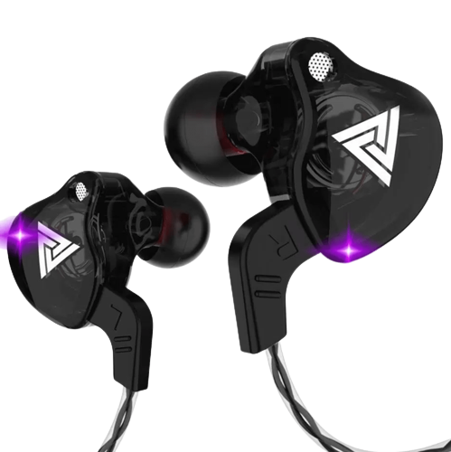
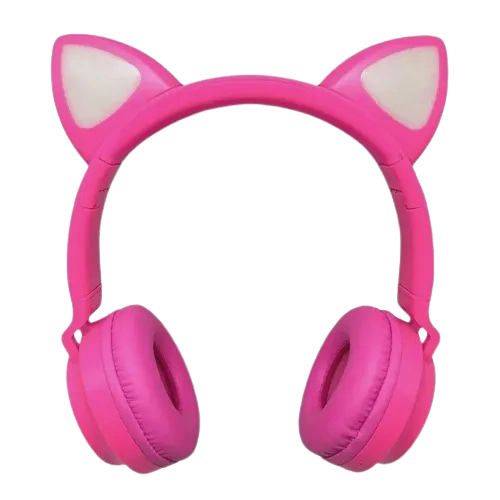
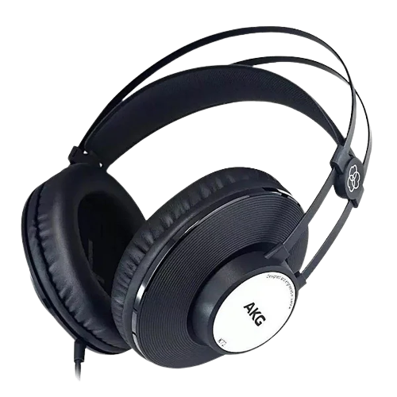

TSI Ear Kracton
TSI Ear Kracton Personalize sua experiência de sono escolhendo entre uma variedade de sons relaxantes, desde suaves notas de piano até o som suave de uma chuva tranquila

Supremacia de fones de ouvidos
TSI Ear Kracton Personalize sua experiência de sono escolhendo entre uma variedade de sons relaxantes, desde suaves notas de piano até o som suave de uma chuva tranquila
TSI Ear Yokai Compatível com dispositivos Bluetooth, o Yokai oferece conectividade versátil para que você possa desfrutar da sua música.

TSI Ear Deogen é um fone de que transcende as barreiras convencionais do áudio. Com uma tecnologia inovadora, o Deogen utiliza a melhor tecnologia para uma experiência sonora única, mantendo você conectado ao seu ambiente enquanto desfruta de uma qualidade sonora excepcional.
O design moderno do TSI Ear Banshee não apenas impressiona visualmente, mas também é construído para resistir ao uso diário.
Além do desempenho excepcional, o TSI Ear Moon ostenta um design elegante e durável.
